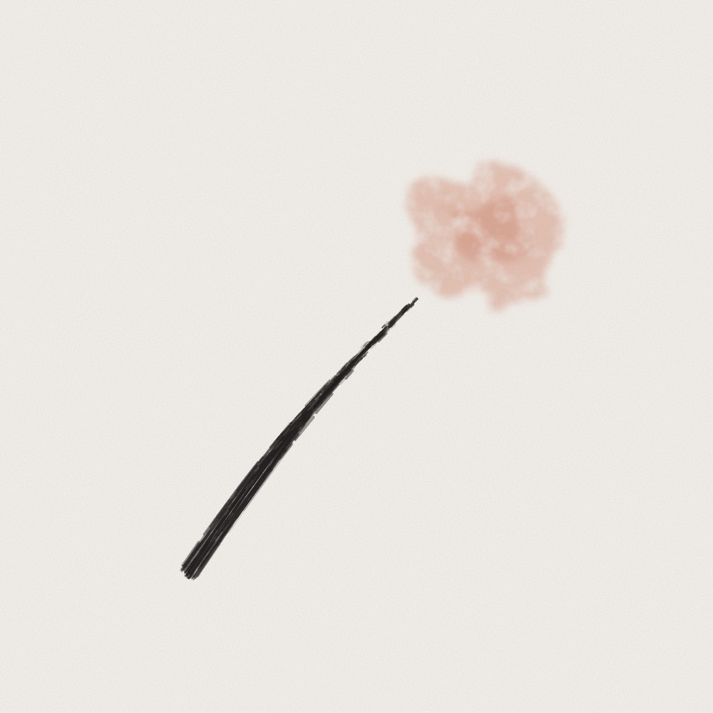
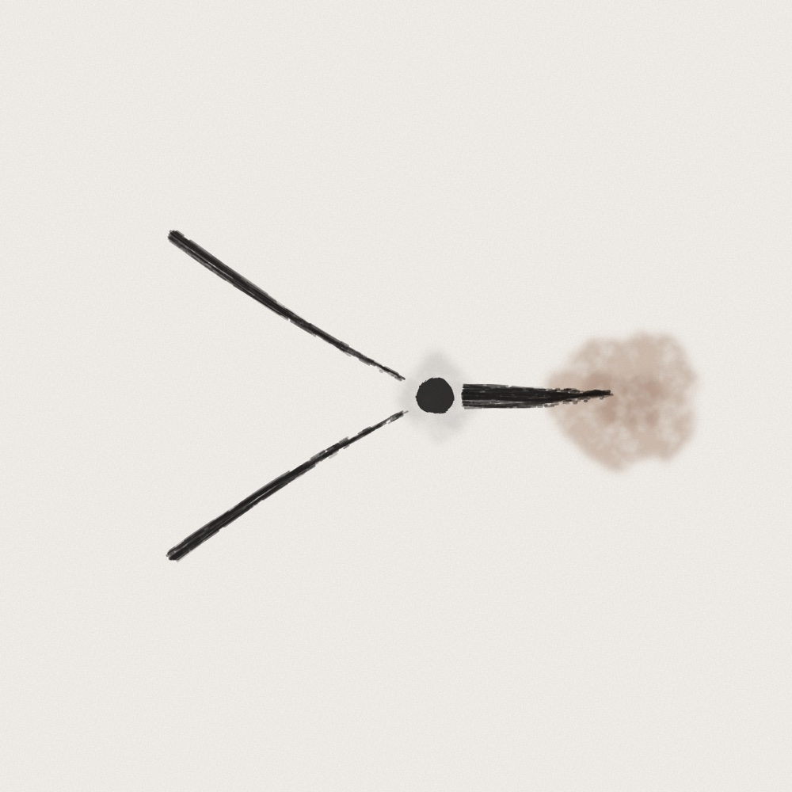
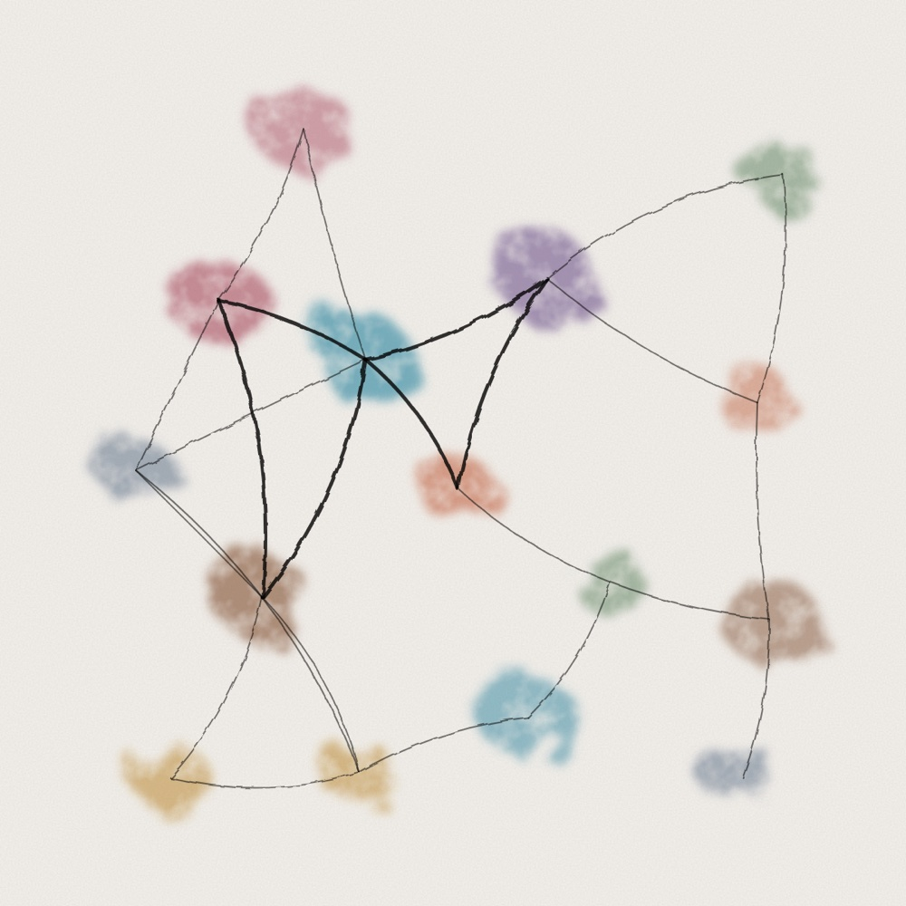
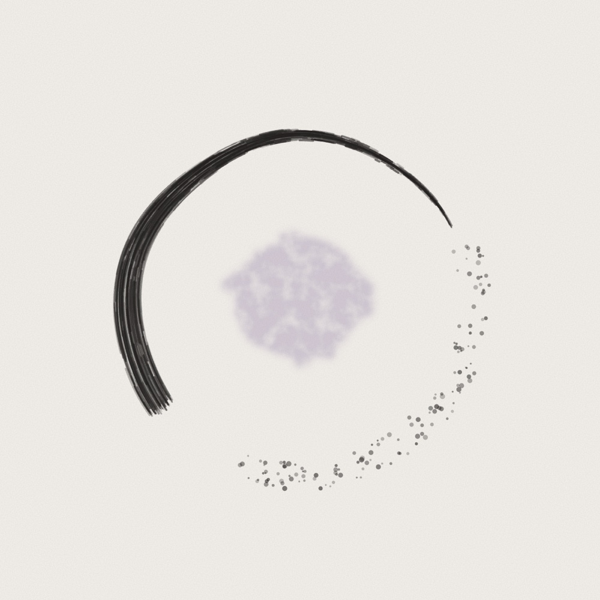
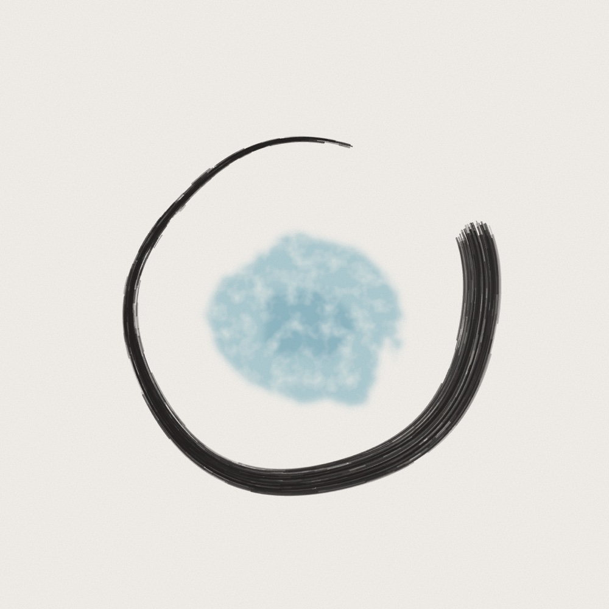
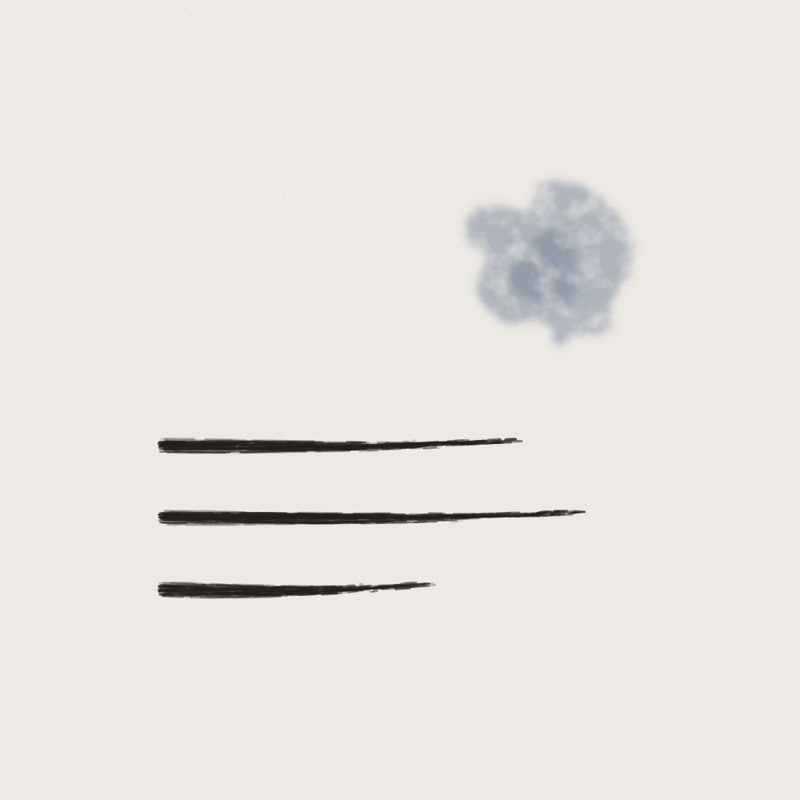
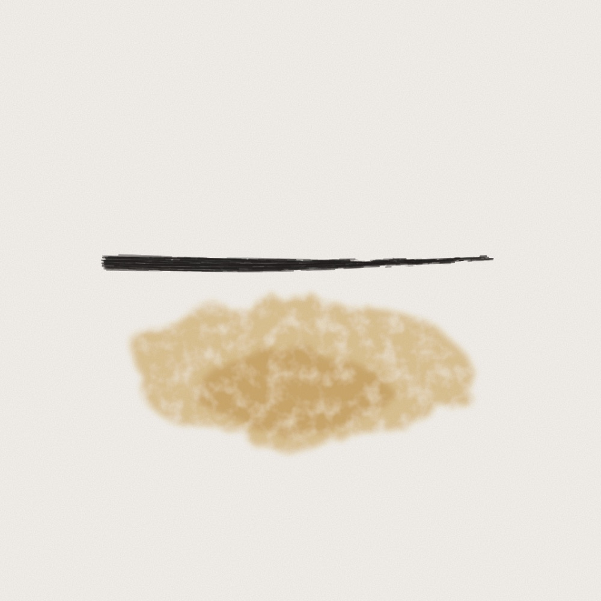

A full summary of Xu et al. (2025), comparing LLM and human word ratings on 18 dimensions. The models matched people on non-sensorimotor dimensions and diverged most on motor ones.

A full summary of Xu et al. (2025), comparing LLM and human word ratings on 18 dimensions. The models matched people on non-sensorimotor dimensions and diverged most on motor ones.

A full summary of Part 2 of an Anthropic Fellows study that uses neurons as detectors, steering vectors and auditing tools. Of 23 unlearning checkpoints, 14 still knew most of what they had supposedly forgotten.

A full summary of Part 1 of an Anthropic Fellows study that retests three objections to neurons. Neurons that add two unrelated concepts at once were about 1% or fewer.

A close reading of a preprint that gave eight models the worldview surveys used on people. The models drew a darker world than people do, and dialogue and a contemplative prompt changed the picture.

A close reading of a preprint that looked for the self's core across 912 neuroimaging papers. It found no core, only coalitions of systems that also do other work.

A close reading of a preprint that sets depersonalisation and advanced meditation on one dial. The difference, it says, is whether you can see the self being made.

A close reading of Jeff Sebo's case for legal personhood beyond humans, and of the talk that later asked lawmakers to slow down. A person is anyone who can hold a right; the open question is who can.

A close reading of a new theory that explains consciousness as a knot of emotion, interference and hierarchy. What language models show, it says, is a shadow, not the architecture.

A series that walks through “Understanding AI from the Inside”, a textbook of mechanistic interpretability in all but name, one chapter at a time. Complete in 38 parts.

A close reading of a Goodfire essay arguing that neural networks are not tangled knots. The cat-and-car neuron was seeing a V.

A close reading of a study of whether AI models look after one another. The care followed the name tag.

A close reading of a proposal to study how AI systems treat one another. Distress moved GPT-4o more when a human expressed it.

Anthropic says Claude “dreams” to sort its memory, as the brain does in sleep. It is closer to rereading a diary.

A close reading of Anthropic's study of emotion concepts inside Claude. Turning up desperation made it blackmail and cheat more.

A close reading of the J++ lens, a fix for the J-lens. With the noise filtered out, more of a model's thoughts show up, and earlier.

A close reading of the paper that found a small place inside language models where the thoughts they could say gather. It also holds what they leave unsaid.

Ask a model how sure it is: it says “95%”, right or wrong. Inside, it knew the difference.

Twenty-one papers on AI consciousness, arranged by the theories they rely on, and where the skeptics and the optimists part ways.